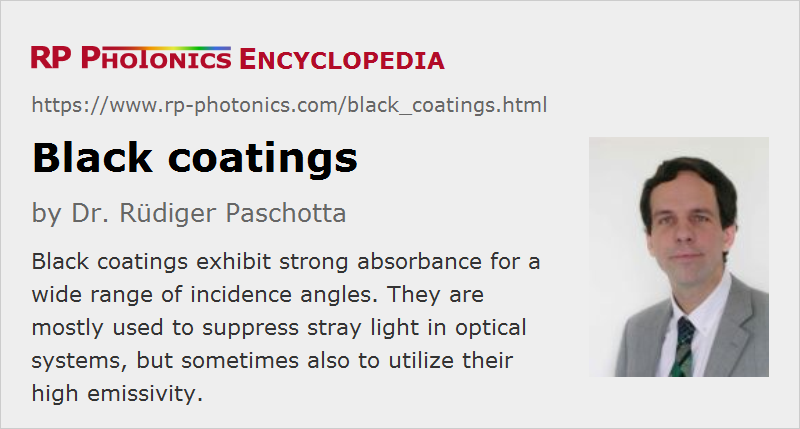

Black Coatings
Definition: coatings with strong light absorption
More general term: absorbing coatings
German: schwarze oder absorbierende Beschichtungen
Categories: general optics, optical materials
How to cite the article; suggest additional literature
Author: Dr. Rüdiger Paschotta
There are various types of coatings which are strongly absorbing light so that they appear black. Some of them also exhibit strong absorption in the infrared or in the ultraviolet. Their main application is to suppress stray light in optical systems.
Strong absorption, i.e. a high absorptance, is associated with strong thermal emission, i.e., a high emissivity. Therefore, black coatings may also be needed where a maximum of thermal radiation from some parts is required. Here, a low reflectance in the infrared is usually of highest importance. However, there are also coatings which are black for visible light while exhibiting a low emissivity (thus also low absorption) in the infrared.
Examples for Applications
Black coatings can be applied to a variety of substances, such as metals, polymers, glasses, semiconductors and ceramics.
In a monochromator, e.g. of Czerny–Turner type, different wavelength components are spatially separated with a diffraction grating, and only a narrow range of wavelength components is transmitted through the exit slit. It must be made sure that all other wavelengths components, which should be suppressed, do not get through the exit slit in other ways by scattering within the monochromator's housing. Therefore, the housing must be equipped with light-absorbing materials – ideally, not only the inner side of the box, but also light shields at well chosen positions. A very low degree of reflectance is desirable. For that purpose, optimized black coatings can be used. This is particularly important for applications where faint spectral components need to be detected in the presence of strong light at other wavelengths – for example, in Raman spectroscopy.
Similarly, in imaging applications it is desirable to suppress a stray light as much as possible. For example, a photographic objective may be hit by sunlight under an angle for which there is no nominal transmission of light to the image sensor. However, light may be scattered within the device, and such scattering should be suppressed with a suitable black coating in order to avoid a substantial degradation of image quality.
Displays, e.g. used by the automotive industry, often need to contain black parts having black coatings. A low reflectance can help to suppress disturbing influences of sunlight.
In a thermal power meter, incident light must be fully absorbed and converted to heat. This may be accomplished with a black coating on a thin metal part connected to a heat sensor. Similarly, black coatings are needed for pyroelectric detectors and for beam dumps.
Thermal solar panels need to efficiently absorb solar radiation and transfer it to water flowing through connected pipes. Strong absorption in the infrared and visible ranges important, also a long lifetime and the durability at elevated temperatures.
In some space applications, the high emissivity of black coatings is utilized, for example to provide effective cooling by thermal radiation into space, in infrared heaters, or in reference standards for thermal radiation.
Performance Figures
The performance of a black coating cannot be fully characterized with a single number, for example with the hemispherical reflectance at a particular wavelength for normal incidence (which is typically a few percent, sometimes below 1%). Often, a wide spectral range is relevant – for example, the full visible range or more, e.g. if a camera sensor also has some responsivity in the infrared. Further, the reflectance may substantially depend on the angle of incidence and the polarization of light. For grazing incidence, the reflectance is often substantially increased.
Some coatings have an extremely low reflectance (e.g. well below 1%) throughout the visible region and may be called super-black.
Note that the optical properties of the coating may change with time; in particular, there can be aging for operation under extreme conditions.
In some cases, the ability of a black coating to withstand high optical intensities is relevant. This is the case for application in power meters, for example. A high thermal stability (chemical stability at high temperatures) is essential.
Some additional properties can be relevant for applications:
- Coatings may not equally well stick to different surfaces. For example, there may be problems when there is a poor match of thermal expansion coefficients of coating and substrate, the coating is not elastic, and the application involves substantial temperature variations. It is sometimes important that they firmly stick even to strongly curved surfaces, for example.
- Some black coatings may need a thickness of 100 μm, for example, while others are effective already for a thickness of only 10 μm. A high uniformity of thickness may be relevant e.g. when equipping narrow slits and pinholes with such coatings.
- There are black coatings with very high mechanical stability, while others are rather sensitive to abrasion and should therefore be protected against accidental touching.
- Some black paints need substantial time for drying after application, while others are finished quite quickly.
- For coatings used in vacuum devices, it is often important to have a low tendency for outgassing – which is a problem for some paints.
- In some application, the electrical conductivity is important, e.g. to avoid electrostatic charges.
Types of Black Coatings
Polymer materials can be equipped with various dyes; some combination of dyes can make a material black. Such substances can also be integrated in paints, e.g. based on acrylic. A wide range of such materials is available, covering large parameter regions in terms of reflectance in different spectral regions, required thickness, viscosity before application, adhesive properties, durability, etc. Tentatively, the thermal stability of such organic materials is quite limited, making them unsuitable for absorbing high-intensity laser light, for example. Also, they can have a tendency for outgassing.
There are also black coatings containing carbon nanotubes. They can achieve a very low reflectance of far below 1% over a substantial wavelength range.
For higher thermal stability, one may use black inorganic coatings, which may e.g. be applied in anodizing processes or with chemical etching. For example, anodized aluminum is widely used. Some coatings are basically oxides, but there are also nickel–phosphorus (Ni–P) coatings and others. Such inorganic black coatings can be very durable, but there is a smaller range of material properties available, comparing with organic materials.
Available Products
Some suppliers offer paints which manufacturers of optical devices can use themselves to equip parts with black coatings. Other products can be sprayed to surfaces.
For some applications, one uses black foils which can be glued to metal parts, for example.
There are also coating services, where black coatings are produced on delivered parts. This may be a more practical approach for substances which need to be deposited in a vacuum apparatus, for example.
Suppliers
The RP Photonics Buyer's Guide contains 8 suppliers for black coatings. Among them:
Questions and Comments from Users
Here you can submit questions and comments. As far as they get accepted by the author, they will appear above this paragraph together with the author’s answer. The author will decide on acceptance based on certain criteria. Essentially, the issue must be of sufficiently broad interest.
Please do not enter personal data here; we would otherwise delete it soon. (See also our privacy declaration.) If you wish to receive personal feedback or consultancy from the author, please contact him e.g. via e-mail.
By submitting the information, you give your consent to the potential publication of your inputs on our website according to our rules. (If you later retract your consent, we will delete those inputs.) As your inputs are first reviewed by the author, they may be published with some delay.
See also: reflectance, beam dumps, anti-reflection coatings, thermal radiation
and other articles in the categories general optics, optical materials
|  |
If you like this page, please share the link with your friends and colleagues, e.g. via social media:
These sharing buttons are implemented in a privacy-friendly way!